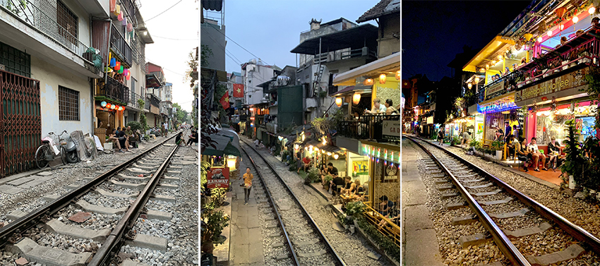
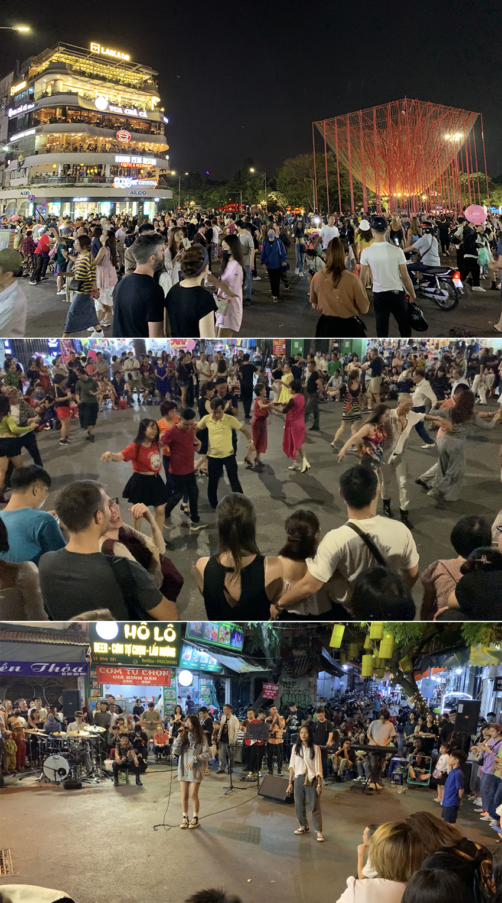
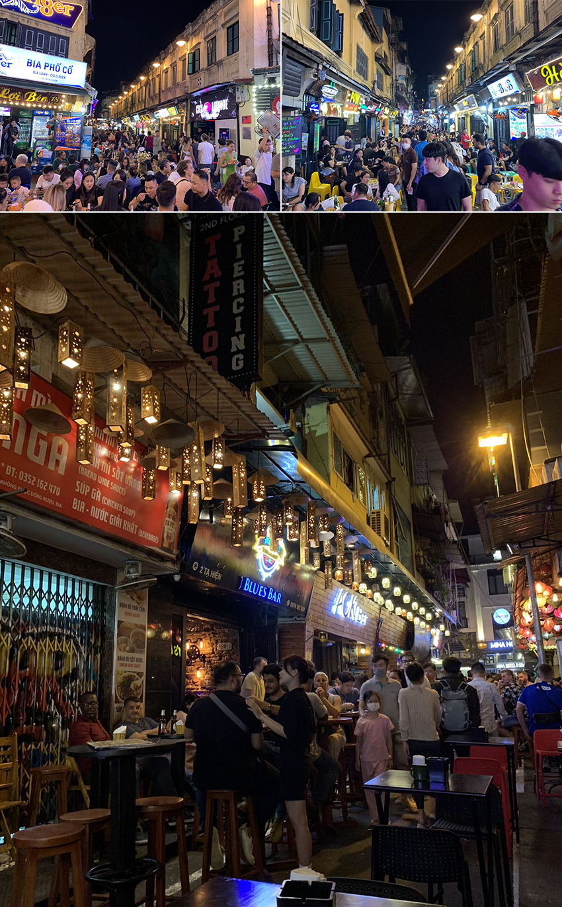
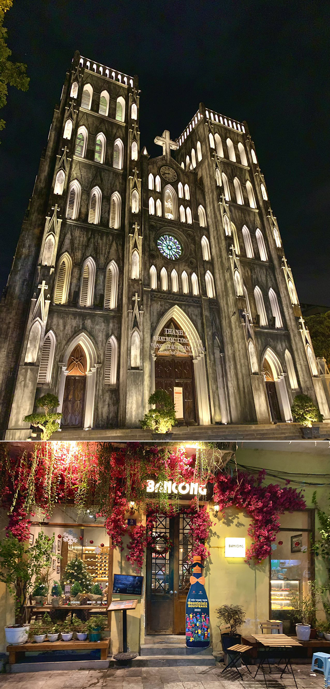
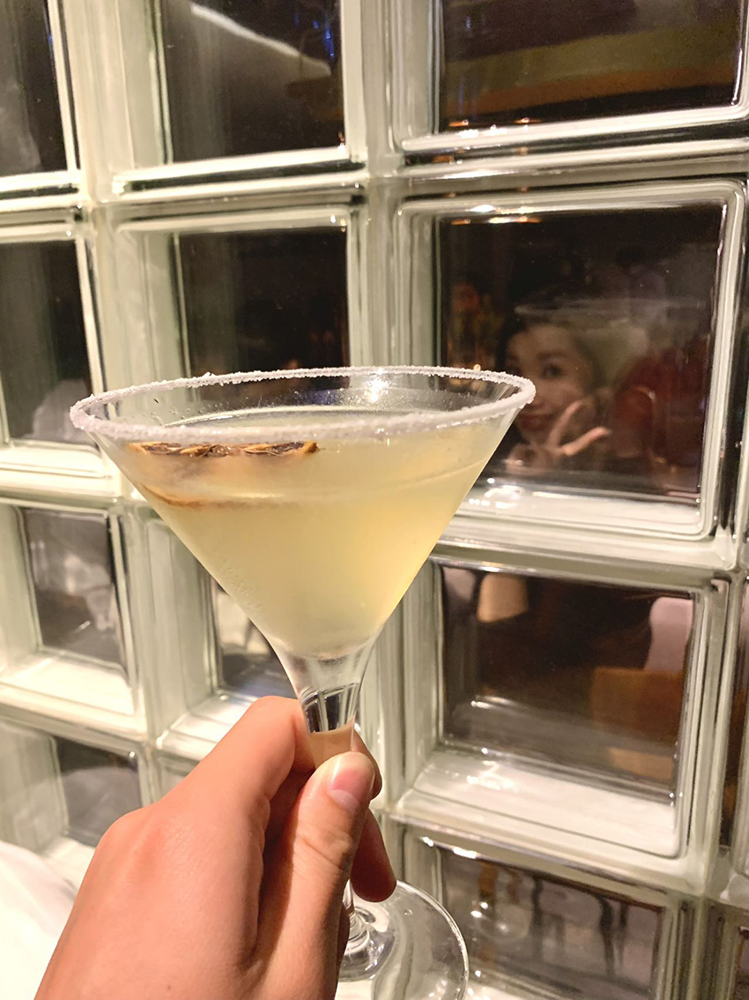
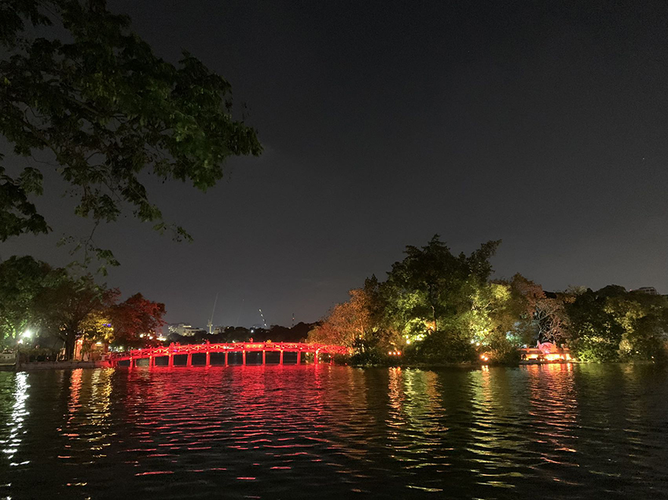

白天在逛還劍湖的時候有種奇怪的感覺，在這麼知名的觀光地區，為什麼好像很多店家都沒有營業的樣子，心想會不會是因為疫情倒了？還是因為疫情暫停營業了？天色也漸漸變暗時才找到了答案，讓我們繼續看看晚上的還劍湖到底是甚麼樣子吧！
下圖的鐵軌景色是不是很熟悉呢？就像是我們平溪放天燈的地方很類似，這裡也是實際上有火車在運作的，在軌道的兩側有咖啡廳或酒吧，他的火車經過時間幾乎都是固定的，所以想前來的人可以確認一下火車的時間，早早的去餐廳卡位。不過要需要留意的是，由於之前有遊客為了拍照沒有留意到火車而發生意外，所以有些路段的軌道是有警察看守不允許進入的，不過店家為了生意還是讓你從巷子進入到餐廳，畢竟沒有進入到軌道區，所以警察也睜一隻眼閉一隻眼，店家也很配合不會讓遊客停留在軌道周邊拍照，所有的拍照都不能超過店家的騎樓區域。白天的軌道是非管制區，拍照時也還是要多留意自身的安全，我們找了很久的小巷子，終於在火車來之前抵達管制區內的餐廳，餐廳裡都是外國旅客沒有看到當地人，隨著時間越晚七彩的燈籠越顯得繽紛。
|  |
看完火車過後走回還劍湖的路上，發現原本沒有開的店家全都開了，人潮也逐漸湧現，下圖是在還劍湖周邊的店家，而且還有藝術裝置，沿著湖邊或是街到小巷都可以看到有很多活動，一群人在跳舞、跳繩、唱歌、還有在古蹟前的歌仔戲與樂器彈奏，超乎想像的熱鬧，許多建築打上燈以後並得更有氣氛了。
|  |
對我來說酒街是一個必來的地方，就算不喝酒也能路過體驗一下這個氣氛，在酒街兩旁的店家我看起來比較像熱炒店的感覺，當然也是有調酒與水煙類型的商品，再來就是這裡也有像夜店規格的店家，DJ放著震耳欲聾的音樂，氣氛非常高亢，也有男/女舞者在台上熱舞演出，讓人流連忘返，這裡的人潮最多，人多到被後面的人推著走的情況。這時讓我想起了，在好幾十年前的士林夜市也是這樣。
|  |
在熱鬧的酒街吃飽喝足後就該來散散步了，走到了比較安靜的地區發現很多的咖啡廳有了燈光的加持，也變得格外迷人，就像是白天是普通上班族，到了夜晚放下眼鏡抹上口紅，展現最光鮮亮麗的一面。晚上的教堂也變得更加耀眼，早上與晚上都有著不一樣的感受，如果沒有時間上的考量，建議在河內完整的待一天。
|  |
| 最後我們選擇了教堂旁的咖啡廳間酒吧小酌一番，拍照的時後店內的人還跟我互動比YA！ | |
|  |
下圖是還劍湖中的景點，在晚上的時間也會打上燈光，不過由於沒有做功課，不知道裡面是參觀甚麼又需要門票，所以就沒有進去了。大約在晚上9~10點之後店家與人潮會開始慢慢變少，這時候就建議可以返回飯店休息，期待明天的探險囉~
|  |